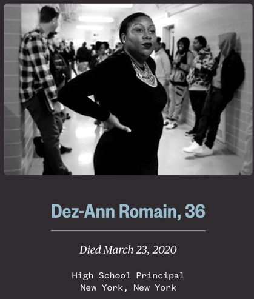
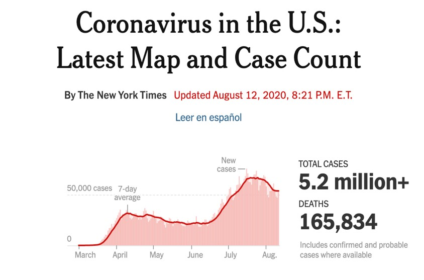
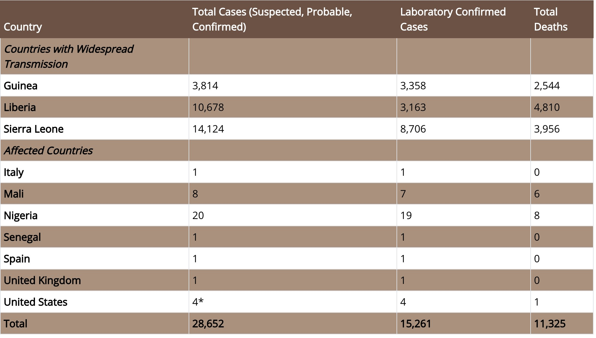
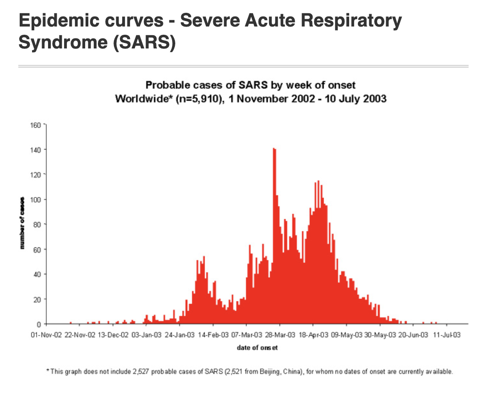

COVID-19 Examined
An examination of the COVID-19 disease in America
By: Akshat Donti
August 26th, 2020

Ramgopal, NBC News
When students walked into Brooklyn Democracy Academy, they were greeted by Romain’s powerful demeanor and empowering smile. She began her life by emigrating from Trinidad to a small underprivileged school in Queens. Romain understood the social stigma behind growing up poor, resource less and the influence that drugs and gangs can have on naive students.
Unfortunately, at the prime age of 36, when she was barely even at the start of her journey of motivating students and driving them to success, COVID got the better of her and she died.

New York Times
According to the CDC, 5,170,000 people have contracted COVID-19 in the US alone as of the writing of this article. Let that sink in for a second.
Another number that might shock you, 165,000 fatalities.
If I displayed these numbers to a random person, the first event that evokes any resemblance to this catastrophe would be a war or maybe even a brutal terrorist attack. Now, here’s the issue with this disconnection. COVID has been a huge issue for almost half a year now. Everyone should be familiar with its devastating impacts and the harms that this illness can have on a person. There must be a reason for this disconnect.
What Could Be the Reason?
When we look at other periods of time when there were cases of mass hysteria surrounding infectious diseases, people took it seriously and actually took precautions

Countries Hit with the Ebola Pandemic
For example, when the world was hit with the disastrous blow of Ebola, our government took all the precautions necessary and we only had four people come back with Ebola. True, Ebola is far harder to transmit to other people than the coronavirus, but the differences in our society’s response still stand. There must be a raging difference between our society then and our society now.
We never heard stories of families being ripped apart and communities being ravaged by this illness in the US because of how well the containment was when it happened. While this disease did not actually have its most harmful effects in the US, with it originating and devastating West Africa, it posed a question to the world of: When we have mass hysteria surrounding an unknown, what is the best solution to solve this calamity?
Let’s look at a different illness of a severity that ranges close to that of COVID.

When we take a closer look at the SARS virus, we can visualize the detrimental impacts it had on the world but what’s more important is how long this virus peaked. This virus peaked in March and by the time May came around, the disease was shut down and the world was without chaos (at least for the time being). Once again, though this virus was indeed harder to transmit than the one we are currently dealing with, the fact is the governments responsible took far stricter measures to protect their populations.
We know that again, the government took precautions, and everyone was well aware of what to do and what not to do during this time in the pandemic. Therefore, if this was not a government problem then or a societal problem, how can we explain the numbers behind COVID?
It can be explained by a simple switch, as our society and our government has simply not been the same.
We can direct blame all around us, but we need to take a closer look at who gives us information and how they spread it before anything else. Simply put, our media has not been the same. Our media has made this a game of conservative vs libertarian or republicanism or democratism. We need to take the politics out of this and unite as one, because if we don’t our lives will never be the same.
Take a closer look around you, countries are doing just fine. Countries like Taiwan, Japan, South Korea, and even the majority of European countries are all recovered and back to normalcy. Now, the USA is a huge country and full of varying opinions and cultures, but when we are fighting a disease like this one, we must turn to facts and statistics to pave the truth. Almost 200,000 people are dead in the United States. This is worse than any terrorist attack, any viral disease and almost as bad as wars in the past. The simple fact that we are comparing the impacts of this disease to a war is problematic and it proves that we are in dire need of a solution.
We turn to the media in our time of need, but the media is not delivering. If they don’t, we need to or else we will have other innocent, iconic, motivational, and inspiring individuals like Dez-Ann Romain whither before our very eyes.
Author
 Akshat Donti is a junior at UC San Diego and is pursuing a B.A. in Economics. For any questions, comments, or concerns, please contact him at adonti@ucsd.edu.
Akshat Donti is a junior at UC San Diego and is pursuing a B.A. in Economics. For any questions, comments, or concerns, please contact him at adonti@ucsd.edu.
Sources
- https://www.nytimes.com/interactive/2020/us/coronavirus-us-cases.html
- https://www.cdc.gov/vhf/ebola/history/2014-2016-outbreak/index.html
- https://www.who.int/csr/sars/epicurve/epiindex/en/index1.html